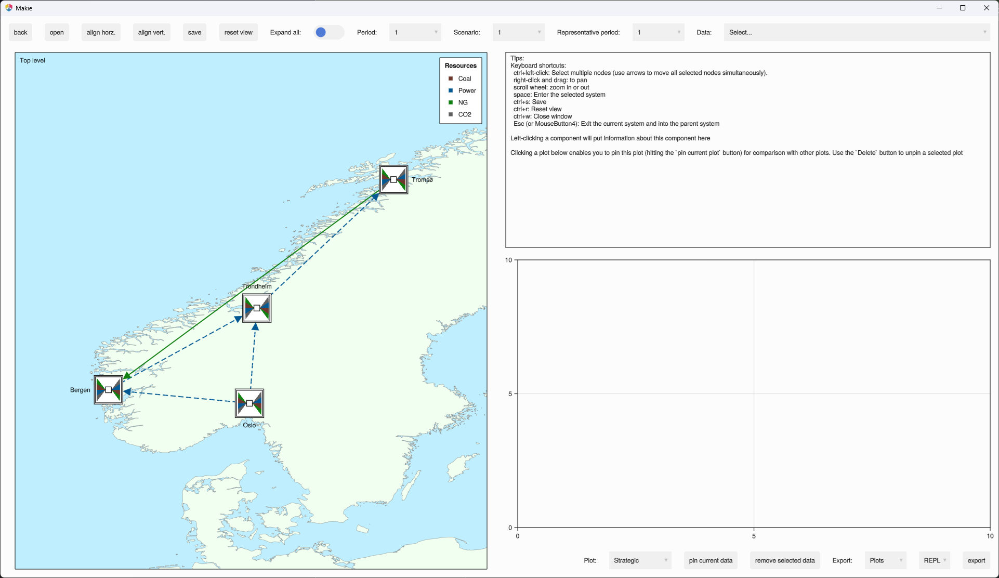

Examples
For the content of the individual examples, see the examples directory in the project repository.
The package is installed with ] add
From the Julia REPL (i.e, command-line in julia; julia>), run
# Starts the Julia REPL
using Pkg
using EnergyModelsGUI
# Get the path of the examples directory
exdir = joinpath(pkgdir(EnergyModelsGUI), "examples")
# Activate project for the examples in the EnergyModelsGUI repository
Pkg.activate(exdir)
Pkg.instantiate()
# Include the code into the Julia REPL to run the following example
include(joinpath(exdir, "EMI_geography.jl"))You should then get the following GUI: 
To the left you here get a visualization of the topology. This window provide the following functionality:
- You can move a
Node/Areaby holding down the left mouse button and dragging to the desired location (at which you then release the left mouse button). TheLinks/Transmissionsto thisNode/Areawill be updated as well. - Selecting a
Node/Area/link/Transmission(by left-clicking) will print information about this object in the box on the top right. The selected object will have a green line style. - You can select multiple nodes/areas by holding down
ctrland left-clicking. - You can change the focus area (pan) of the window by holding down the right mouse button and dragging.
- You can zoome in and out by using the scroll wheel on the mouse.
- Hovering a component will show the type of this component.
The toolbar on top provides the following functionality:
back: If you are using theEnergyModelsGeographypackage as in this example, you can here navigate back to theTop levelif you are currently in an area (opened by theopenbutton, see below). This button has the keyboard shortcutMouseButton4(orEsc).open: If you are using theEnergyModelsGeographypackage as in this example, you can open an area by first selecting the area to open and then clicking this button. This button has the keyboard shortcutspace. Opening an area can also be accomplished by double clicking this area icon.align horz.: This enables you to align selected nodes/areas horizontally.align vert.: This enables you to align selected nodes/areas vertically.save: This button saves the coordinates of theNodes/Areas to file (files if there are multiple areas; a single file for each area in addition to a file for theTop level). The location of these files can be assigned through thedesign_pathinput parameter to theGUIfunction.reset view: Resets the view to the optimal view based on the current system if the view has been altered.Exapnd all: You can toggle this on to show all components of allAreasPeriod: Use this menu to choose aStrategicPeriodof your caseScenario: Use this menu to choose aScenarioof your caseRepresentative period: Use this menu to choose aRepresentativePeriodof your caseData: Use this menu to select the available data to be visualized in the plot area to the bottom right (if a component is selected, the menu will update to contain the available data for this component).
An additional toolbar on the bottom right is related to the plot area above and has the following functionality:
Plot: This menu enables activation of one of the three available plots one forStrategicPeriod, one forRepresentativePeriodand one forOperationalPeriod.pin current data: Clicking this button pins the lastly plotted data which enables comparing with other data in the same time typeremove selected data: A plot can be selected by left-click and can then be removed by clicking this buttonExport: Choose if you want to export all data (or entire window) in the optionAllor the current active plots (Plots).- This menu enables you to choose the format of the export (you can also print the data to the REPL by using the
REPLoption here). export: This button finally exports the data using the setup in the previous two menus.